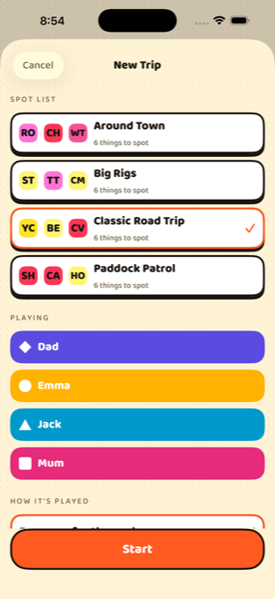
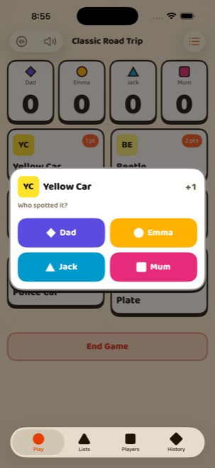

How to play
Three things to set up, then you are playing for the rest of the drive.
-
Add everyone in the car
Each person gets one of seven colours and a shape — a circle, a triangle, a star. The shape is how you find yourself on the scoreboard, and it stays yours no matter which theme the app is wearing. You can note where people usually sit, which is what makes “left side against right side” possible later.
-
Start a trip and pick a list
Choose one of the four built-in lists or one of your own, tick who is playing, and decide how it ends — when you stop, at a target score, when somebody finishes the list, or after a set time.

-
Call what you spot
Tap the card for the thing you spotted, then tap who spotted it. Playing on your own, it is a single tap. If listening is on, saying “Spotto!” does the same thing without anybody touching the phone.

Tap what you spotted, then tap who spotted it.
Calling it out loud
Turn on listening with the waveform button on the game screen and the app listens for the calls on your list. Say the call and your name — “Spotto, Audrey” — and the point goes straight to the right person. A bare “Spotto!” still scores; you can say whose it was a moment later and the app moves it.
Voice is entirely optional and nothing is locked behind it. Every single thing that can be spoken can be tapped instead, so a call the app mishears costs you one tap and never the game.
Two things worth knowing. The first time you use voice, iOS downloads a speech model, so that one time needs a connection — after that it works with no signal at all. And Spotorama will not start listening over music that is already playing; it refuses rather than talking over you, and if music starts mid-trip it hands the audio back and tells you it has stopped.
What is on the lists
Four lists ship with the app, six spots each. Everything here is editable — the points, the names, the lot — and you can build a list from nothing.
Classic Road Trip
Paddock Patrol
Big Rigs
Around Town
Teams
Kids against grown-ups, front seat against back, or whoever you like. A team changes what the scoreboard adds up, never what a spot is worth — you still call your own name, and the app knows which side you are on.
If you have filled in a few details about people, the app can suggest a split and tell you why. If it cannot make a fair one honestly, it says so rather than guessing about somebody.

When somebody gets it wrong
Press and hold a spot card and choose Take one back, then pick who it comes off. The list button at the top right of the game screen shows everything scored this trip, so you can fix anything from there.
Nothing is ever really deleted — a correction is recorded as a correction, which is why the history of an old trip still adds up years later.